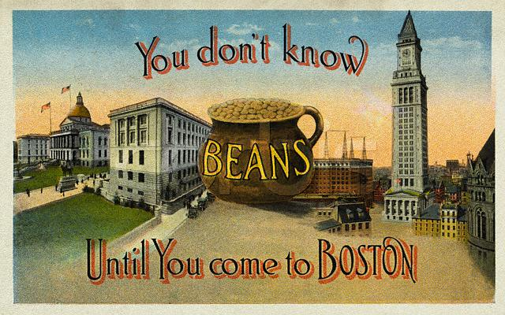

Jan. 31st - Feb. 3rd -- Boston, MA
Most people heading from NY to Seattle would simply go west. But we
drove north to Boston and then south, all the way around Florida. (West
wouldn't happen until we'd finished our tour of Anita Bryant's stomping
grounds.) But let's begin at the second beginning. Boston held friends
and
family unvisited for too,too long. At the top of our
list, Eric's stepbrother,
Eric Swanson.
For those who don't already know
the story, John Eric (dubbed Eric to avoid confusion with John, his
dad) entered our lives when we were in our early teens, living in Dobbs
Ferry. He would come up from Maryland for visits. After we moved to
Utah we saw him during summer trips he made to see his father. We
adored Eric. He was just the sweetest and most serious kid. He
was also deeply funny. Standing
over six feet at 11, poor Eric used to get carded trying to
go to the movies; he needed ID to prove he was still young enough
to buy a kid's ticket.
His manner and his height--now topped out at 6'5"--made him seem older
than his years.
The summer we got to know Eric well, he was 15 and we were 20. He was a
budding musician who lusted after a Fender jazz
bass. We helped fund the cause by hiring him to paint the bedroom
in our apartment. Who knew that painting over old, dark, porous,
striped
wallpaper wasn't the smartest thing to do? For
all the yellow paint the walls sucked up, they might
as well have been made of sponge. Ultimately,
the
outcome was fine. It just took an insane amount of effort to make
the room look decent. And we were paying hourly. But really, we didn't
mind. Eric turned
into a seriously good bass player. (And later, an incredibly gifted
woodworker.)
Fast-forward 28 years and you'll find Eric living in Boston, with his
wife, Virginia.
Though they've been married for five (!) years and are
expecting their first baby, we're meeting Virginia for the first time.
(Their wedding date coincided with my mom's breast cancer surgery, and
so, we couldn't be there.) We were so excited to finally see them that
conversation came out in a flood. It was instantly easy to be
with them and within minutes we were big Virginia fans. We
had arrived at their welcoming, old house after dark. Still, we
headed out into the wicked cold to the nearby arboretum to give Rufus
and Minnie,
their sweet, shy new pooch, a chance to romp. There was so much ground
to
cover--the last time Eric saw Eric was about 10 years ago; for me, 13
years have evaporated. We took a stab at compressed history but found
there was just too much current stuff to cover. Smartly, we wound up
spending most
of our time in the present. After dinner at the neighborhood Korean-run
sushi joint and giant plates of Bi Bim Bop,(later dubbed Bippity
Boppity Boo) we miraculously found room for ice cream at a dessert
place run by a friend of theirs. Seriously sated, we made plans for
continuing festivities.
We were staying at XV
Beacon,
a spiffy boutique hotel on Beacon Hill,
just a couple of blocks from the State House. It's
distinguished by a bevy of delights. There are the fabu views of lovely old buildings. The control
panel by the bed is like something from a bad 1960's movie seduction
scene--it has push buttons to ignite the gas fireplace, dim the lights
and crank the stereo. The room's honor bar is home to two excellent, if
ridiculously expensive, splits of wine--Opus One and Chateau d'Yquem.
(We didn't touch either, but slept better just knowing they were
there.) Plus, there's a small lobby lined with book-filled bookcases,
each volume wrapped in a plain white paper sleeve, turning the show lit
into true props. (This falls somewhere between witty and disturbing.)
All that is well and good, but for my money, it's the shower that
pushes XV Beacon to the top of the class. It has the best shower ever,
bar none.
It's a drench head backed up by a
tsunami of water pressure. Standing in this shower feels
a little like swimming. It's official: I've fallen in love with plumbing
We meet Eric and Virginia for breakfast the next day, but the cold has
us cowed. Despite superior layering, within a block a few blasts of
arctic wind get the better of us. We abandon our search for a breakfast
joint and eat in the hotel's expensive and very silly
restaurant. The space is nice enough--welcoming, if a tad dark. But the
food, while
tasty, is ridiculous: tiny portions, architecturally stacked. This
translates into a puck-shaped tower
of scrambled eggs, carefully centered on the plate. A sprinkling of
perfectly golden potato cubes, masquerading as hash
browns perch nearby.
They're served in wee copper skillets.
Shavings of artisan breads--minuscule,
slices of hearty whole grain raisin walnut and sourdough play the part
of toast. We ask for
ketchup for the potatoes and are brought an itty bitty ramekin holding
just a dab. Even though the potato cubes are few, this puny bit of
condiment just isn't up to the job. We ask for more and are brought yet
another itty
bitty ramekin. Surely there's a source filling these? We long for a big-ass ketchup bottle,
preferably one with a pump.
We split for the afternoon and head for a party in Arlington, hosted by
our
friends Jim Ricci and Willemien Insinger. Jim, an
old chum from our Dobbs Ferry days and
a fine musician from his youth, is a twelve-tone composer who teaches
at a technical college. We met Willemien,
his wife, when
they visited us in San Francisco 15 years ago--right after they
were married. (We had such fun with them on that visit.) In the
interim, they've had a son, Joe, who is handsome,
charming, quite an athlete, and clearly excited about the Super Bowl,
which is due to air in a few hours. Jim
invited a few friends from high school who have relocated to Boston.
That included Corky Kaempf, who lived down the street from me when
I was still being pushed about in a carriage. It had been 15 years
since we'd last seen him. We'd run into Susan Edinger, another
Dobbs Ferry High
School alum, within the past few years. Susan is
wonderfully in touch with lots of folks and a
wellspring of information about
who's up to what and we soak up her tidbits of news. It's sobering to
hear how many have lost parents and who among us is struggling with
health problems. It's a little like the documentary 21 Up. There's this
out-of-time quality to our connection--all our points of reference are
buried in distant memory. We're trying to fill in the missing bits, to
make our stories form some sort of whole--a relative impossibility in
just a few hours. At the end of the party, poor Willemien
is
unbelievably patient as we dredge up names of people even we all can
barely remember, delighting each time one of our synapses fires on a
name or an arcane fact about someone we could discuss only with a very
small circle of friends. Jim is such a sweet friend. Just as we're
getting ready to leave, he shows me a small art book I had given him
decades ago as a birthday present. I was touched he still had it and
that he remembered that I had given it to him. And we were even more
touched that he and Willemien
went
to the trouble of bringing us all
together.
After the party, we reconvene with Eric and Virginia at their house to
watch the Super Bowl and debate the relative merits of different baby
names. We happily chat our way through half-time, missing the Janet
Jackson/Justin Timberlake debacle. Skip ahead a week: my favorite story
about that comes from Martha Ladner, Rick Ayre's sister, who we visited
as we passed through Florida. (More on that in another entry.) Martha
was watching the game with her nine year-old twin daughters, who didn't miss the moment and turned
to their mom to ask the exact right question: "Mom, is that real?" What
would you say?) Back in
Boston, Eric-the-taller has to get up ungodly early to go to work (5
a.m.) and so, we leave their house about 20 minutes before the game
ends. The city streets are nearly empty as we glide back to our home
away from home. We cruise past bars where fans are glued to the game.
Listening on the radio, we pull up to the hotel up just as the Patriots
kick the tie-breaking field goal. When we turn off the car a wall of
cheers is erupting from the buildings around us. But that's nothing
compared to the sound to come the next day, when 1.5 million Patriot
fans turn out the for a victory parade that ends just a block from our
hotel.
We wake up to a sunny, relatively warm day. The low 40s pass for
tropical to us now and so we head out to wander Beacon Hill,
swimming with the determination of spawning salmon through a river of
football-crazed masses.
The evening brings more hang time with Eric and Virginia and plans to
return to Boston to lend a hand after the baby is born. The next day,
we happily meet up with Manine, ogle her absolutely lovely
home-cum-private-gallery in Jamaica Plain. (Her growing art collection
is spectacular on these walls.) We have a fine supper with her at The
Center Street Cafe; the restaurant's owner is goofy about Ms. M and has
dubbed her "cupcake." He stopped by our table with a sample of birch
syrup he had just collected on a sugaring trip to New Hampshire. After
a taste (yummy!) we imagine it in martini form, served with a perfect
curl of white bark perched on the rim. The food and chat are great and
we continue to root for the success of Keith and Manine's planned Great
Britain invasion.
We drive out of Boston to the news that the Massachusetts Supreme
Court has the good sense to recognize same-sex marriages. It's a
beautiful day.